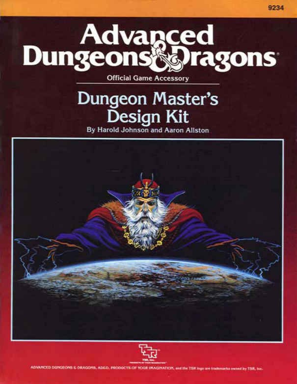

书名页与制作人员 · Title and Credits
Advanced Dungeons & Dragons®：地下城主设计工具箱 Dungeon Master’s Design Kit，Official Game Accessory，9234
本工具箱由三册组成：Book I《冒险设计》、Book II《表单册》与 Book III《冒险菜谱》。Book I 由 Aaron Allston 撰写；项目设计：Harold Johnson、Aaron Allston；编辑：Christopher Martika；协调：Bruce Heard、Karen S. Boomegarden；封面绘画：Keith Parkinson；内页绘画：George Barr；排版：Betty Elmore。出版方为 TSR, Inc.，1988 年，美国印刷。

REF1《地下城主屏风》与 REF2《玩家角色卡》是独立资源，不并入本书。